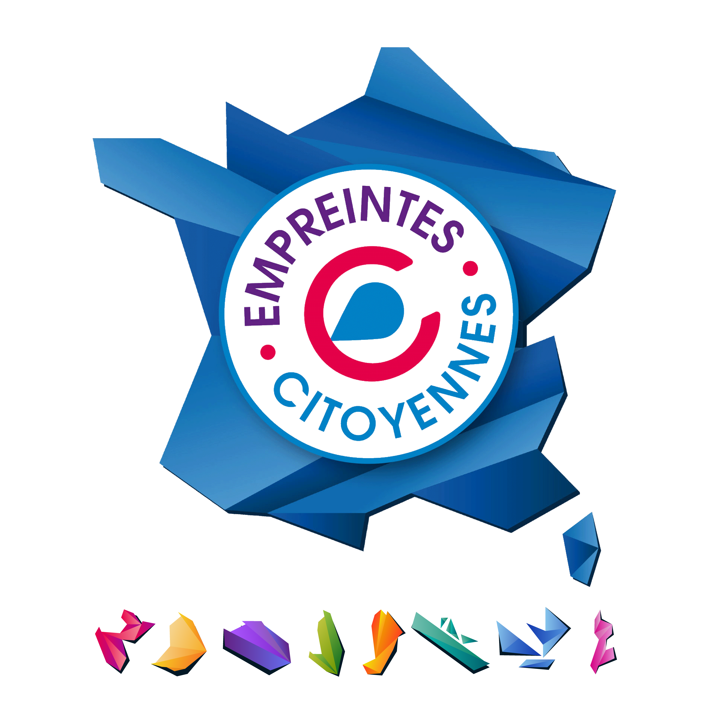

Kaufman & Broad
CDC Habitat
Kaufman & Broad
CDC Habitat

Kaufman & Broad
CDC Habitat

Présentation du projet d'aménagement sur site
Kaufman & Broad et CDC Habitat invitent les habitants, riverains et acteurs du quartier à découvrir le projet, poser leurs questions et contribuer à identifier les sujets importants pour la suite.
Un projet urbain se comprend mieux lorsqu'il est présenté dans son environnement réel. Cette rencontre sur site permettra de découvrir les lieux concernés, de mieux comprendre les grandes intentions du projet et d'échanger sur son insertion dans le quartier.
L'objectif est de présenter le projet de manière concrète, depuis le terrain, afin de mieux percevoir son évolution, ses liens avec l'environnement existant et les principaux sujets d'attention pour la suite.
Un parcours concret pour comprendre et questionner le projet
État actuel du site, son occupation, sa topographie, ses contraintes et les raisons de sa transformation.
Programmation, formes urbaines, organisation générale, hauteurs, vues, distances et relations avec le tissu existant.
Accès, circulations, stationnement, cheminements, espaces végétalisés, principes paysagers et usages futurs.
Empreintes Citoyennes accompagne ce temps de dialogue en qualité de tiers de confiance. Son rôle est de faciliter les échanges, de permettre l'expression des questions et remarques, et de veiller à ce que les contributions soient recueillies de manière claire et utile.
La démarche vise à favoriser un dialogue responsable entre les porteurs du projet, les habitants, les riverains et les acteurs du quartier.
Les remarques formulées par les participants seront recueillies, analysées et partagées afin de nourrir les prochaines étapes de la démarche.
Lundi 22 juin 2026 à 18h — Secteur Soupetard
Entrée libre · Inscription souhaitée pour organiser l'accueil
Merci, votre inscription a bien été enregistrée.
À lundi 22 juin à 18h, secteur Soupetard !